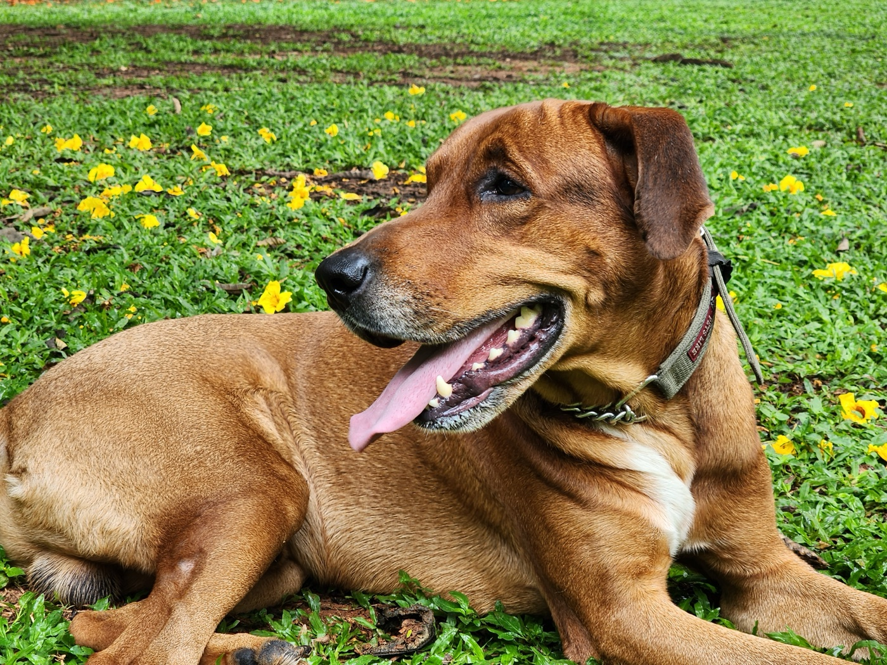
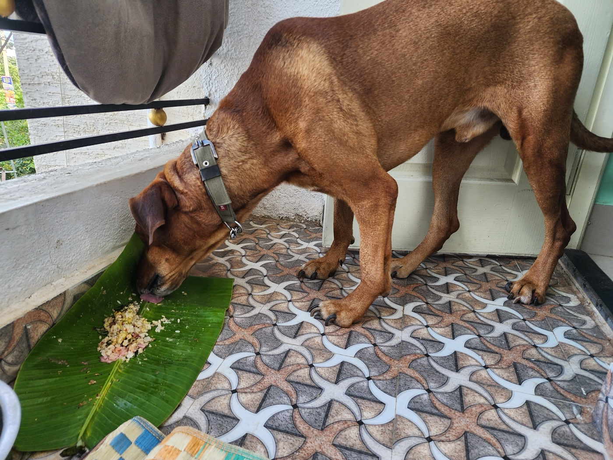
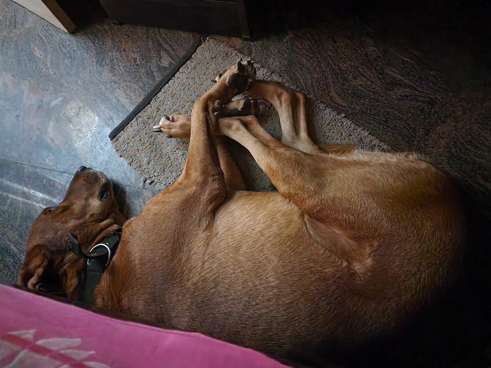
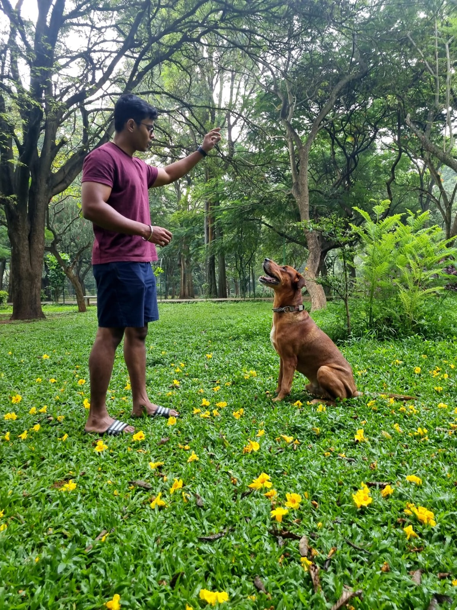
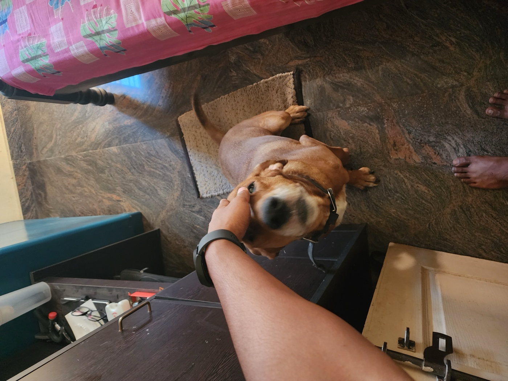
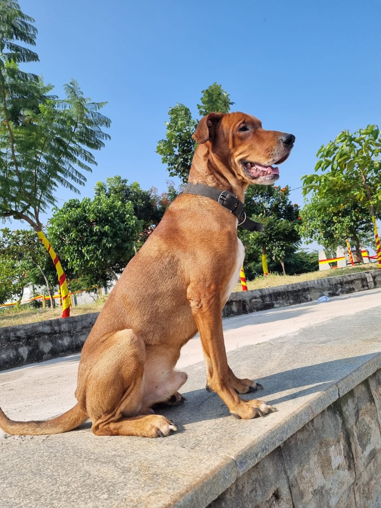

LEO
You were not just my dog. You were my friend, my roommate, my family.
It has been a month and a half since you left, Leo, and not a day has gone by without me missing you. My heart is heavy, and I wish I could think of you without tears in my eyes. You were woven so deeply into my life that there is nothing around me that doesn't remind me of you.
I still remember the day you came into my life. You were less than a month old, so small and full of life. From that moment, I named you, trained you, and walked by your side. You grew with me, and for the past seven years, you never once left my side. You were always in my room, waiting for me, always ready to be called over for a pet.

I miss the little things most, the last bite from my meals that I always saved for you, the way you waited by the door when you heard my car pull in, no matter how late it was. I miss the joy in your welcome when I came home from my trips, the way you patiently waited for me to unpack. I miss the feel of your ears, your head beneath my hand, and the quiet comfort of your presence.


The day I lost you was the worst day of my life. I never imagined how deeply you had become part of me until you were gone. My walks feel incomplete without you by my side. Every time I leave home, I glance at the balcony, half-expecting to see you there, watching me off like you always did. My room feels empty without the sound of your nails on the floor or the soft snore as you slept. Even now, I sometimes walk in and hope you'll come bounding toward me.

You were not just my dog, you were my friend, my roommate, my family. Saying goodbye to you was the hardest thing I have ever had to endure. You saw sides of me no one else ever has, and in your leaving, you took a piece of my heart with you.

Leo, you loved me your entire life, and I will spend the rest of mine remembering you. My life is quieter now, emptier in so many ways, but it will forever be richer because you were in it.

The feel of your ears, your head beneath my hand, and the quiet comfort of your presence.
Rest well, my boy. You will always be with me.